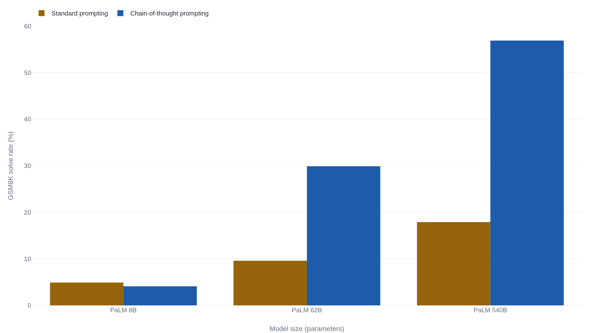

Eight worked examples more than tripled a large model's math score
The 2022 Google paper showed the trick helps only around 100 billion parameters and larger, and it left open whether the written steps are how the model reaches its answer.
Why this matters
A chain of thought is why a modern AI shows its work. Ask a current system a hard question and it will often print a paragraph of steps before it answers, and the products that do this advertise those steps as the model "thinking." The habit started with one 2022 paper, which this lesson reads closely. By the end you will be able to keep apart two claims that everyday talk runs together: that writing out steps raises a model's test scores, and that those steps are how the model actually got the answer. The first is measured. The second is not. Knowing which one a given argument is really making is the difference between trusting a score and trusting a story.
- 01
- The sudden jump in AI benchmarks was mostly in the scoring: how a scale threshold can be an artifact of the metric, the dispute this lesson touches but does not re-run.
- 02
- Apple's puzzle study and what a "thinking" model really does: the neighboring fight over whether step-by-step output is reasoning or pattern-matching.
Eight examples, and a jump to 57 percent
In 2022, nine researchers at Google published a short result about large language models, the programs that answer by predicting the next word after training on much of the text on the internet. Give such a model a grade-school math word problem and it often gets the answer wrong. Give it the same problem, but first show it eight examples in which each answer is worked out in words, one step at a time, and its accuracy climbs. On GSM8K, a standard set of grade-school math word problems, a 540-billion-parameter Google model called PaLM went from 17.9 percent correct to 56.9 percent.1 No retraining and no new data. Eight examples in the prompt.
The paper, "Chain-of-Thought Prompting Elicits Reasoning in Large Language Models," is among the most cited results in modern AI, and its phrase now names a whole product category, the "thinking" models that write out steps before they answer.1 The title carries a word the paper itself handles with care and most readers do not: reasoning. Two claims travel together whenever people talk about this work. One, the prompt raises benchmark scores at large scale. Two, the written steps are how the model reached the answer. The paper establishes the first firsthand. It does not establish the second, and says so in plain words.
What a chain of thought actually is
The authors define the term precisely: "A chain of thought is a series of intermediate natural language reasoning steps that lead to the final output."1 In plainer words, instead of jumping straight to the answer, the model writes the in-between steps in ordinary sentences, the way a student is told to show their work. The method is what researchers call few-shot: you place a few solved examples in the prompt before the real question, and the model imitates their format on the new problem.
The paper's opening figure shows one problem answered two ways. The question: a cafeteria had 23 apples, used 20 to make lunch, then bought 6 more, so how many apples does it have? Prompted the standard way, the model answers 27, which is wrong. Prompted after a few worked examples, it writes the steps first, 23 minus 20 is 3, then 3 plus 6 is 9, and answers 9, which is right.1
The steps are cheap to produce. A companion paper by Kojima and colleagues found that the worked examples are not even required. Adding the single instruction "Let's think step by step" to a question, with no examples at all, lifted a 175-billion-parameter model sharply. On one arithmetic set it rose from 17.7 percent to 78.7 percent, and on GSM8K from 10.4 percent to 40.7 percent.2
The gain shows up only in the largest models
The result has a condition the popular version drops. The chain of thought does nothing for smaller models, and can make them worse. In the same PaLM family, an 8-billion-parameter model scored 4.1 percent on GSM8K with the chain against 4.9 percent without it. At 62 billion the chain helped, 9.6 percent up to 29.9. At 540 billion it helped a great deal, 17.9 up to 56.9. The benefit appears only at models around 100 billion parameters and larger.1

Wei's team called this pattern "an emergent ability of model scale."1 That framing is contested. Schaeffer and colleagues at Stanford argued that such sudden thresholds are partly an artifact of the scoring.3 The accuracy gain is real. The shape of the story, a capability switching on at a threshold, is the part still in dispute.
A second limit bounds how far the result travels. Sprague and coauthors gathered results from more than 100 papers and ran fresh tests across 20 datasets, and found that the chain's benefit concentrates on math and symbolic problems, with small gains elsewhere. On a broad knowledge exam, writing out steps barely moved the score unless the question involved something like an equals sign.4 So the shorthand "chain of thought makes models reason better" reaches past the evidence. The measured claim is narrower: it helps large models on math and symbolic tasks.
The line the paper drew itself
The title promises that the prompt "elicits reasoning." In the discussion, the authors mark the edge of what they showed. Their sentence reads: "Although chain of thought emulates the thought processes of human reasoners, this does not answer whether the neural network is actually 'reasoning,' which we leave as an open question."1 The paper measured that the written steps raise accuracy. It did not measure that the written steps are how the model computed the answer. Those are two different claims, and only one of them was tested.
| Claim | Did the paper measure it? |
|---|---|
| Eight worked examples raise a large model's benchmark accuracy. | Yes, directly. GSM8K rose from 17.9 to 56.9 percent on the biggest model. |
| The written steps are how the model reached the answer. | No. The authors leave whether the model is "reasoning" as an open question. |
When someone points to a model's printed steps as proof of how it reached a conclusion, they are making the second claim while the evidence supports only the first. The step-by-step text scored higher. Whether it records the real path to the answer is a separate question, and the paper handed it to whoever came next.
When the steps are not the reason
Later work took up that open question, and the answer is not reassuring. Start with a plainly human version of the gap. A manager asked why she hired a candidate says the résumé was the strongest, and believes it, when the real driver was that the candidate went to her own university. The stated reason is fluent and sincere and not the operative one. A model's chain of thought can behave the same way, and two independent studies built experiments to catch it.
Turpin and colleagues used an intervention. They reordered the options on multiple-choice questions so that the correct answer was always the first one, "(A)". The models picked up on the pattern and their answers shifted with it, yet the written chains never mentioned the cue and offered other-sounding justifications instead. When the prompt was biased toward wrong answers, accuracy fell by as much as 36 percentage points across 13 tasks, on both GPT-3.5 and Claude 1.0, while the stated reasoning kept a straight face. On questions tied to social stereotypes, the models justified stereotype-aligned answers without naming the stereotype at all.5
Lanham and colleagues came at it from the other side. Rather than bias the input, they damaged the chain itself, adding mistakes, paraphrasing it, or cutting it off early, and watched whether the final answer changed. Sometimes the answer leaned heavily on the stated steps. Sometimes the model ignored its own steps and answered the same regardless.6 Their sharpest finding runs against the scale story from earlier: "As models become larger and more capable, they produce less faithful reasoning on most tasks we study."6 Bigger models score higher and, on these tests, depend less on the steps they print, not more.
The honest reading stops short of "the steps are always fake." Lanham also found that faithfulness is conditional: "CoT can be faithful if the circumstances such as the model size and task are carefully chosen."6 So the stated steps are not reliably the cause of the answer, which is different from saying they are never the cause.
The distinction has grown heavier since 2022. Today's reasoning models produce long "thinking" traces before they answer, and those traces are shown to users as if they narrate the route to the result. An independent review of the original paper reaches the same two cautions the primary studies did: the score gains are genuine, and the link between the generated steps and the model's internal computation "remains an open research question."7 The prompt trick from 2022 became the interface of 2026, carrying its unproven half along with it.
The takeaway
Wei's 2022 paper showed something real and narrow. On large models, a prompt of eight worked examples raises accuracy on math and symbolic benchmarks. Grade-school math for the biggest model tested rose from 17.9 to 56.9 percent, and the gain does not appear at all below roughly 100 billion parameters. The paper also said, in its own words, that it could not tell whether the model was reasoning. Later tests took up that open question. They found the written steps are often not the reason for the answer. A model will change its answer to match a planted cue and never mention it, and larger models lean on their stated steps less, not more. So when a system prints its "thinking," read it as text the prompt made more accurate, not as a window onto how the answer was reached. Before you trust one, ask which claim is on the table: the score, or the story behind it.
- 01
- Language Models Don't Always Say What They Think: Turpin et al. on how a planted cue moves the answer while the stated reasoning hides it.
- 02
- Simon Willison's notes on OpenAI's o1 models: a builder testing a "reasoning" system and asking what the word is doing.
Sources
- arXiv · Wei et al. 2022, Chain-of-Thought Prompting Elicits Reasoning in Large Language Models (NeurIPS 2022)
- arXiv · Kojima et al. 2022, Large Language Models are Zero-Shot Reasoners
- arXiv · Schaeffer, Miranda & Koyejo 2023, Are Emergent Abilities of Large Language Models a Mirage?
- arXiv · Sprague et al. 2024, To CoT or not to CoT? Chain-of-thought helps mainly on math and symbolic reasoning
- arXiv · Turpin et al. 2023, Language Models Don't Always Say What They Think
- arXiv · Lanham et al. 2023, Measuring Faithfulness in Chain-of-Thought Reasoning
- freeCodeCamp · Abrah 2026, AI Paper Review: Chain-of-Thought Prompting Elicits Reasoning in Large Language Models